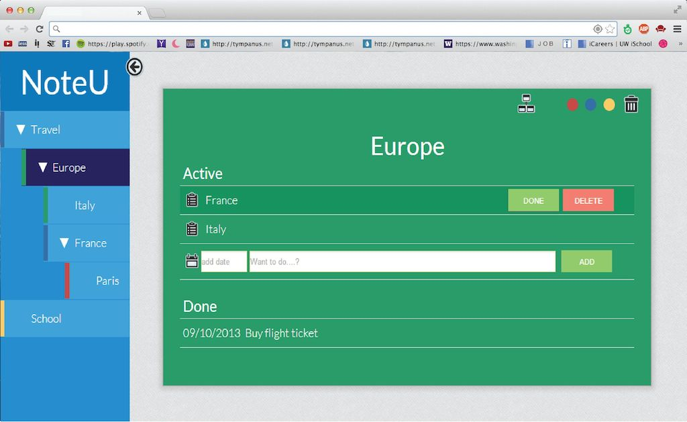

Introduction
“NoteU” is an online notes taking web application that integrates with the concept of files and uses dropbox as cloud server. NoteU is implemented as a sub-module under project, Keep Found Things Found, in University of Washington, directed by Professor William Jones.
Responsibility
User Experience Designer and Front-End Developer to deliver wireframes, prototypes and HTML/CSS.
Design Process
- Define goal of the projects and target users with stakeholders.
- Ideate design options according to defined personas.
- Build Low to hi fidelity prototypes.
- Develop the app and ship the product.
Award
NoteU was selected as the best project among all the 6 teams by visiting alumnus from Microsoft, UW iSchool, Adobe.

